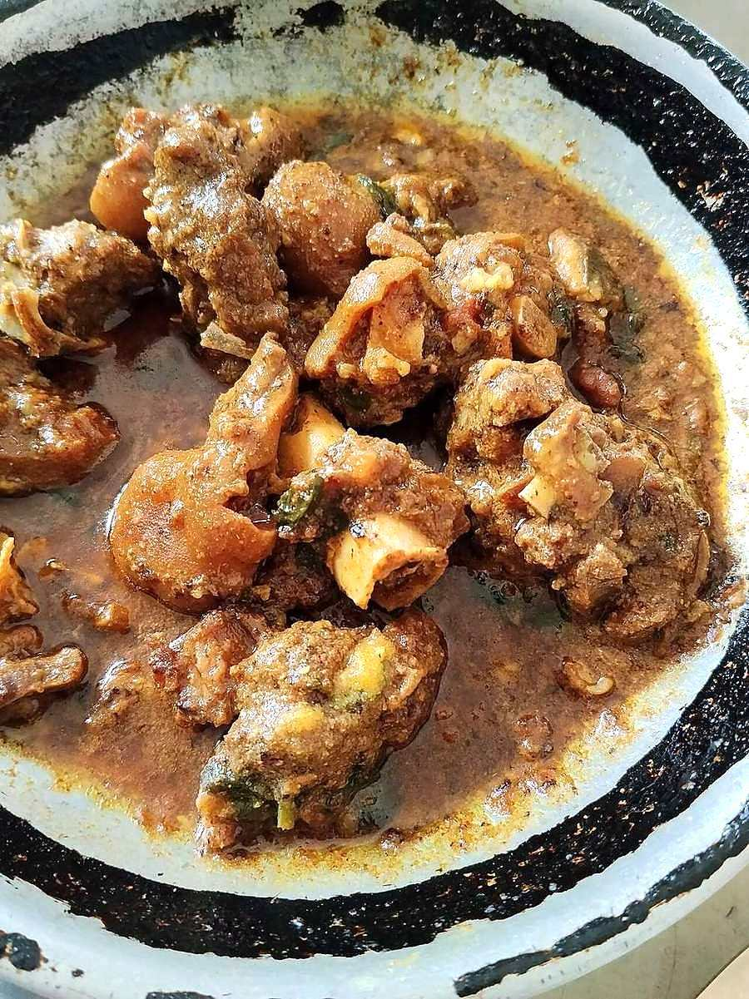

Mutton Kaliya
the everyday turmeric-yellow mutton curry of Lucknow kitchens, lighter and sharper than korma

Contains: milk
Ingredients
Quantities for 4.
- 700g bone-in shoulder, cut into 4cm pieces Muttonshoulder and neck give the best gravy
- 200g, whisked completely smooth Yogurt
- 3 medium: 2 finely sliced, 1 finely chopped Onion
- 4 tbsp Gheehalf mustard oil is common in home kitchens
- 1.5 tbsp paste Ginger
- 1.5 tbsp paste Garlic
- 1 tsp Turmerickaliya is named for its yellow, so do not skimp
- 2 tsp Coriander Powder
- 1 tsp Chilli Powder
- 1 tsp Fennel Powderground saunf, the Awadhi backbone
- 1/2 tsp Dry Ginger Powder
- 1 Black Cardamom
- 4 green, bruised Cardamom
- 4 Cloves
- 1 piece, 2cm Cinnamon
- 1 Bay Leaf
- 1/4 tsp, ground Maceoptional
- a generous pinch, soaked in 2 tbsp warm milk Saffronoptional
- 1 tsp Kewra Wateradded off the heatoptional
- to taste Salt
- 500ml, hot Water
Cookware
stovetop
Checked against the ingredient list for ten allergens: milk, egg, fish, crustaceans, tree nuts, peanuts, sesame, mustard, soy and gluten. Brands vary, so read the label on anything new to you.
Before you start
- Bring the mutton to room temperature 30 minutes before cooking. Cold meat seizes and takes longer to tenderise.
- Whisk the yogurt with a fork until it is pourable and lump-free. Lumpy yogurt splits the moment it hits the pan.
- Soak the saffron in warm milk at least 20 minutes ahead so it bleeds properly.
Method
- Fry the sliced onion in the ghee over medium heat until evenly deep brown, 12-14 minutes. Lift it out onto paper and reserve.Pull it out at reddish-brown, not black. Burnt birista turns the whole kaliya bitter.
- In the same ghee add the bay leaf, cinnamon, cloves and both cardamoms. When they swell and smell sweet, about 40 seconds, add the chopped onion and cook to pale gold, 6 minutes.
- Stir in the ginger and garlic pastes and fry 2 minutes, until the raw smell goes and the fat looks glossy.
- Add the mutton and brown it hard over high heat for 8 minutes, until the pieces are seared on all sides and the pan is dry.
- Take the pan off the heat for a minute, then whisk in the yogurt a spoonful at a time, stirring constantly. Return to low heat.Off the heat and slowly. This is the only step where a kaliya can curdle.
- Add the turmeric, coriander, chilli, fennel and dry ginger powders with the salt. Bhuno over medium heat for 8-10 minutes, until the ghee separates and pools at the edges.The colour shifts from pale to a deep, clear yellow when the masala is done.
- Pour in the hot water, bring to a boil, then cover and simmer on the lowest heat for 50-60 minutes, stirring every 15 minutes, until the meat gives to a spoon.
- Crush the reserved birista between your palms and stir it in with the ground mace. Simmer uncovered 5 minutes to thicken.
- Take off the heat, stir in the saffron milk and kewra water, cover and rest 10 minutes before serving with sheermal or plain rice.
Safe temperatures: Whole cuts of mutton, beef and pork are done at 63°C / 145°F, rested 3 minutes. A long braise passes that well before the meat is tender. Reheat leftovers to 74°C / 165°F. FoodSafety.gov
Storage
Keeps 3 days refrigerated and tastes better on day two. Reheat gently over low heat with 3-4 tbsp water; never boil hard or the yogurt gravy will split.
Nutrition Low estimate
High protein: 40 g a serving, 41% of the calories
| Per serving429 g | Per 100 g | |
|---|---|---|
| Calories | 391 kcal | 92 kcal |
| Protein | 39.7 g | 9 g |
| Carbohydrate | 15.0 g | 4 g |
| of which sugars | 6.1 g | 1 g |
| Fibre | 2.9 g | 1 g |
| Fat | 19.0 g | 4 g |
| of which saturated | 10.3 g | 2 g |
| of which unsaturated | 7.1 g | 2 g |
Ingredients given to taste count as zero, so the real figures run a little higher. Nearest database match used for mutton. Estimated from raw ingredients using USDA FoodData Central.
More like this: Gluten-free Indian recipes · Awadhi/Lucknowi recipes
Times, yields, allergens and nutrition are guidance. Use your own judgement on doneness and on storing. More in About.